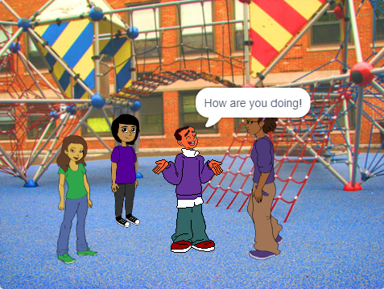
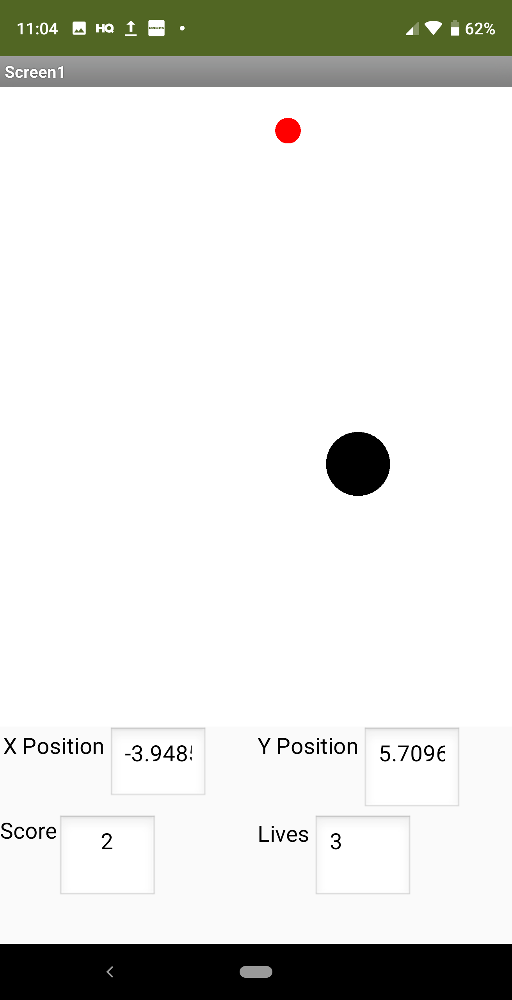
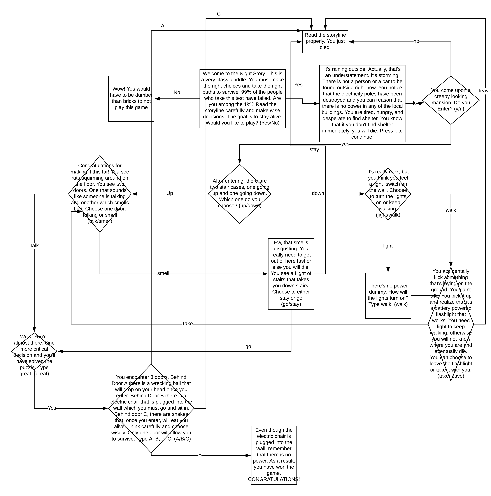

Check Out My Cool Projects!
Game Coding in Scratch

I created a simple soccer game in Scratch. This was a very elementary project as Scratch is a block based visual programming language. This game was inspired by my admiration for the game of soccer. The controls for this game are:
- Arrow keys to move the soccer player
- Space Bar to shoot the ball
CLICK ON THE TITLE TO PLAY THE GAME
My Animated Story

I told a rememberable event that happened in middle school through animations created using Scratch. This program demonstrates my proficiency with creating animations, using sounds, applying the broadcasting function, controlling multiple costumes of a sprite, and integrating different stages, resizing characters, and much more.
CLICK ON THE TITLE TO WATCH THE ANIMATION
targetTilt

tiltTarget is an Android application that was created using the MIT App Inventor. MIT App Inventor is an open source web application that teaches the fundementals of programming to those who are new to it.
Through MIT App Inventor, I created a game that uses both the orientation and clock mobile functionality. The player can tilt their phone to control their black ball. The player has 3 seconds to colide their black ball with the red target ball. If the player fails to complete this task, they will lose a life (they start out with 10). At the bottom, you see how many points the player has, how many remaining lives the player has, the X coordinate of the black ball, and the Y coordinate of the black ball. After player runs into the red ball or the time runs out, the red target ball will be placed at a new random location
CLICK ON THE TITLE TO DOWNLOAD THE GAME
Night Story

This the my very first formal program in Python. In this process I learned many things including comments, functions, variables, outputs, logical operators, and syntax. Night Story is a very classic riddle that I once heard when I was a child. Although I may have butchered the riddle, I tried my best to create what I remember. I would advise you to keenly follow the instructions and plot. If you fail to do so, your character will die. Good luck and have fun!
If you find a mistake in the program or one of the decisions you make doesn't lead to the appropriate path, please let me know. This project was very difficult and confusing because of the many posiilities and defining and calling the functions.
CLICK ON THE TITLE TO TAKE THE ADVENTURE
Monty Hall Problem Game

I chose to do the Monty Hall problem because ever since I was young, I have been very fascinated by this statistical riddle. My python project incorperates a function, a while loop, if/else statements, various python operators, logic, concatenation, user input, and many more.
In terms of abstraction, I believe that my program uses some elements of abstraction. Rather than adding many (if) conditional statements to form the logic when the player selects a door, I am able to use loops to see which doors are possible and available in my program. This reduces the complexity while increasing the efficiency of the program. Instead of using many conditional statements and having numerous lines of code, make the code consise by eliminating the unnecessary logic. Learning how to use loops and breaking them tremendously helped with that.
CLICK ON THE TITLE TO DOWNLOAD THE GAME